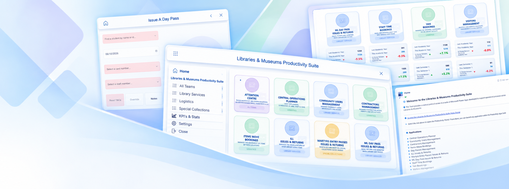

01
IT Systems
Systems administration, infrastructure, technical troubleshooting and systems building.
TECHNOLOGY PORTFOLIO
Corbett Systems is the professional technology portfolio of Keith Corbett, bringing together established IT systems experience with current hands-on work across Microsoft Azure, Microsoft 365, Power Platform, Power Apps and Dataverse.
IT Systems Administrator & Consultant

Selected application work • Power Apps • Dataverse • UI design
PROFESSIONAL PROFILE
My background spans IT systems administration, systems building, consultancy and technical project work. More recently, I have been developing practical business applications using Microsoft's Power Platform and related technologies.
My current work combines established systems knowledge with hands-on application development, data modelling, Power Fx, user-interface design and reporting. The portfolio is intended to show the work itself rather than make claims that cannot be demonstrated.
CAPABILITIES
Systems administration, infrastructure, technical troubleshooting and systems building.
Microsoft Azure, Microsoft 365, Teams and related Microsoft platform technologies.
Power Apps, Dataverse, Power Fx and practical business application development.
Process improvement, data-driven applications, reporting and user-interface design.
FEATURED PROJECT
A suite of Microsoft Power Apps and Dataverse-based business applications developed to support operational processes across Libraries & Museums.
The project will become the principal technical case study on this site, documenting application design, data structures, interface work and selected implementation examples.
Project case study coming next →CERTIFIED KNOWLEDGE
The AZ-104 certification provides independently assessed knowledge across core Azure administration areas. It is presented here as certified knowledge, distinct from the practical project experience demonstrated elsewhere in this portfolio.
APPROACH
The focus is practical: understand the process, structure the data, build the application and refine the result around the people who use it.